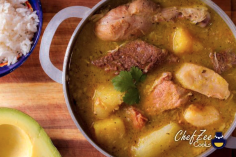

True Dominican Sancocho

My fiance is from the D.R. and his mother has made me some amazing food! The first time she made sancocho I fell in love with it. It is often made with 7 different meats for a special festivity or holiday.
I have simplified the meats in my version, but don't be afraid to use many kinds; this is my mimicked recipe. Great by itself or served the traditional way over rice. Super filling and even better the next day.
Ingredients
- 5 cloves garlic, minced
- ¼ cup dried oregano
- 2 teaspoons salt, divided
- 5 chicken drumsticks, or more to taste
- 1 pound bone-in beef chuck
- 1 pound bone-in pork loin roast
- 2 large lemon, juiced
- 2 large onion, quartered, divided
- 10 tablespoons vegetable oil, divided
- 1 tablespoon vinegar
- 1 ¼ gallons water, or more as needed
- 1 (13.75 ounce) can chicken broth
- 1 (10.5 ounce) can beef consomme
- 4 cubes beef bouillon cubes, divided
- 1 ½ pounds Spanish pumpkin, peeled and cut into 1 1/2-inch chunks
- 1 pound sweet potatoes, peeled and cut into 1 1/2-inch chunks
- 1 pound eddeos, peeled and cut into 1 1/2-inch chunks
- ½ pound yuca (cassava) roots, peeled and cut into 1 1/2-inch chunks
- ½ pound potatoes, peeled and cut into 1 1/2-inch chunks
- 2 green plantains, peeled and cut into 1 1/2-inch chunks
- 2 ears corn on the cob, cut into quarters
- 3 stalks celery, diced
- 2 large carrots, chopped, or more to taste
- 1 large green bell pepper, diced
- 1 bunch cilantro, chopped
- 1 dash adobo seasoning (Optional)
- Mash garlic, oregano, and 1 teaspoon salt together in a bowl.
- Douse chicken, beef, and pork with lemon juice in a large bowl. Drain half the liquid. Mix the mashed garlic, half of the onions, 2 tablespoons vegetable oil, and vinegar into the meat mixture.
- Heat the remaining 1/2 cup vegetable oil in a large skillet over medium-high heat. Add the meat mixture in batches and cook until browned on all sides, 15 to 20 minutes.
- Transfer the browned meats into a large pot. Add half of the water, chicken broth, beef consomme, 2 bouillon cubes, and 1 teaspoon salt. Bring to a boil; reduce heat to low and simmer, covered, until meats are more than halfway cooked through, about 40 minutes.
- Combine pumpkin, sweet potatoes, eddeos, yuca, potatoes, plantains, corn, celery, carrots, green pepper, cilantro, and adobo seasoning in the simmering pot. Return soup to a boil. Reduce heat to low and continue simmering until the sancocho is thick and the root vegetables are soft, 1 to 2 hours. Stir in the remaining half of the water by gradual increments to replace any evaporated liquid.